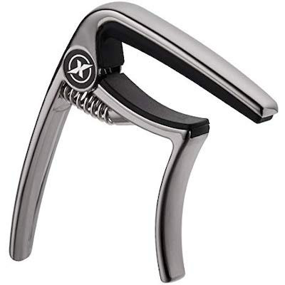

<!DOCTYPE html>
<html>
  <!--
  Task: Perceptual-baseline control task in cMST
  Author: Gavin Stark
  Forked from main cMST-Online on 11/20/19 and modified for mobile / Cordova
  Forked again on 8/20/20, pulled out Cordova, and setup for JATOS

Revised: November 20, 2019 (CELS) for Cordova
   11/22/19 (CELS) - cleanup parameter section
   11/25 (CELS): Button size increase
   12/4/19 (CELS): Using .replace not .href and will take you back to index.html if the end
   12/5/19 (CELS): Styles to alter text/button sizes, ensuring deviceready, meta-tag
   12/6/19 (CELS): Shifted data saving to savedata.js and setup to allow local backup save on iOS
   4/13/20 (CELS): Goes to end.html if this is the last phase
   4/16/20 (CELS): Will detect if on SONA and go back there for credit
   8/20/20 (CELS): Forked off and reworked for JATOS
   8/24/20 (CELS): Fixed jumping stimuli when using button response mode
   5/31/22 (CELS): Added bit about blank screen in main task
   10/21/22 (CELS): Updated default to buttons 
   2/28/23 (CELS): Updated to jsPsych7
   
  Optional parameters:
  [sid=##]: Subject ID -- used for data file name (default=1234)
  [resp=X]: Response mode -- set to 'keyboard' to use keys, anything else to use buttons (default=button)
  [rand=#]: Should which stimuli are shown as repeats vs. lures be randomized? (default=0)
  [q_pcon=pagename]: Base of HTML filename to add into the queue after this task (default=null)

 -->

<head>
  <meta http-equiv="Content-Security-Policy" content="default-src 'self' data: gap:  'unsafe-inline' 'unsafe-eval' 
    https://fonts.gstatic.com http://www.stark-labs.com/exp/jsPsych/mobile_cMST/append_log.php http://www.stark-labs.com/exp/jsPsych/mobile_cMST/write_data_file.php; 
    style-src 'self' 'unsafe-inline' https://fonts.googleapis.com/css; media-src *; 
    img-src 'self' data: content:;">

  <script type="text/javascript" src="jatos.js"></script>
  <script type="text/javascript" src="js/index.js"></script>
  <script src="js/jspsych_731/dist/jspsych.js"></script>
  <script src="js/jspsych_731/dist/plugin-html-keyboard-response.js"></script>
  <script src="js/jspsych_731/dist/plugin-html-button-response.js"></script>
  <script src="js/jspsych_731/dist/plugin-categorize-image.js"></script>
  <script src="js/plugin-categorize-image-buttons.js"></script>
  <link rel="stylesheet" href="css/jspsych.css"></link>
  <style>
    .jspsych-display-element {
      font-size: 200%;
    }
    .jspsych-btn {
      font-size: 150%;
    }
  </style>
</head>
<script>


jatos.onLoad(function() {
  const phasename='cmst_instr_contOSN';
  var sid=jatos.studySessionData['sid'];
  if (typeof sid === 'undefined') {
    sid=1234;
  }
  var resp_mode='button';
  if (jatos.studySessionData['resp_mode'] == 'keyboard') {
    resp_mode='keyboard';
  }
  //resp_mode='button';

  var jsPsych = initJsPsych({on_finish: function() {
      if (0) { jsPsych.data.displayData(); }
      else {
        var order=jatos.studySessionData["order"];
        jatos.studySessionData["taskindex"] += 1;
        var expdata = jsPsych.data.get().json();
        // Submit results to JATOS and queue the end or next task
        if (typeof order === 'undefined' || order.length == jatos.studySessionData["taskindex"]) { 
          // we're done
          // Check if this came from SONA - should have URL.sid and .sona
          if (typeof jatos.urlQueryParameters.sid === 'undefined' || typeof jatos.urlQueryParameters.sona === 'undefined' ||
              typeof jatos.studyJsonInput['experiment_id'] === 'undefined' || typeof jatos.studyJsonInput['credit_token'] === 'undefined') {
            jatos.submitResultData(expdata,jatos.endStudy);
          }
          else {
            var redirect='https://uci.sona-systems.com/webstudy_credit.aspx?experiment_id='+jatos.studyJsonInput['experiment_id']+
              '&credit_token='+jatos.studyJsonInput['credit_token']+'&survey_code='+jatos.urlQueryParameters.sid;
            jatos.endStudyAndRedirect(redirect,expdata);
          }
        }
        else {
          // submit and start the next
          jatos.submitResultData(expdata, () => { jatos.startComponentByPos(order[jatos.studySessionData["taskindex"]]) });
        }
      }
    }
  });
  
  jsPsych.data.addProperties({
    task: phasename,
    subject: sid,
  });

  // Default is keyboard here - override if buttons
  var instr_choice=[' ']; // 32 is space
  var instr_txt='<i>spacebar</i>';
  var trial_type='';
  var trial_txt='<i>Old</i> (<b>v</b>), <i>Similar</i> (<b>b</b>), or <i>New</i> (<b>n</b>)?';
  var trial_choices=['v','b','n'];
  var extra_html='';
  if (resp_mode == 'button') {
    instr_choice=['OK'];
    instr_txt='<i>OK</i>';
    trial_type='-buttons';
    trial_txt='<i>Old</i>, <i>Similar</i>, or <i>New</i>';
    trial_choices=['Old','Similar','New'];
    extra_html='style="margin-top:112px;"';
    extra_html='';
  }
  var intro = {
    type: (resp_mode == 'button' ? jsPsychHtmlButtonResponse : jsPsychHtmlKeyboardResponse),
    choices: instr_choice,
    prompt: '<p>Press ' + instr_txt + ' to begin</p>',
    stimulus: 'You are going to see pictures of everyday items, one at a time. For each one, you will select <b>Old</b> \
      if you have seen this exact picture before, <b>Similar</b> if it is similar, but not exactly the same as one you saw \
      before, or <b>New</b> if it is entirely a new picture. \
      <p>The way to think of <i>Similar</i> is whether it has the same name, but is a different picture in any way. \
      <p>A few practice trials should make this clear.',
  }
  var new1 = {
    type: (resp_mode == 'button' ? jsPsychCategorizeImageButtons : jsPsychCategorizeImage), 
    stimulus: 'img/foil_1032.jpg',
    key_answer: 'n' , button_answer: 2,
    choices:trial_choices ,
    prompt: (resp_mode == 'button' ? '<p> You have not seen any images yet so you should select <b>New</b> here. </p>' :  '<p>  You have not seen any images yet so you should select <i>New</i> (<b>n</b>) here. </p>'),
    force_correct_button_press: true,
    incorrect_text: (resp_mode == 'button' ? "<p> You haven't seen this image yet, so press <b>New</b></p>" : "<p> You haven't seen this image yet, so press <i>New</i> (<b>n</b>)</p>"),
    correct_text: "<p " + extra_html+ ">Good! You have not seen this image yet, so you correctly selected <b>New</b></p> ",
      
  }
  var new2 = {
    type: (resp_mode == 'button' ? jsPsychCategorizeImageButtons : jsPsychCategorizeImage),
    stimulus: 'img/foil_1033.jpg',
    key_answer: 'n' , button_answer: 2,
    choices:trial_choices ,
    prompt: (resp_mode == 'button' ? '<p>  You have not seen any images yet so you should select <b>New</b> here. </p>' : '<p>  You have not seen any images yet so you should select <i>New</i> (<b>n</b>) here. </p>'),
    force_correct_button_press: true,
    incorrect_text: (resp_mode == 'button' ? "<p> You haven't seen this image yet, so press <b>New</b></p>" : "<p> You haven't seen this image yet, so press <i>New</i> (<b>n</b>)</p>"),
    correct_text: "<p " + extra_html+ ">Good! You have not seen this image yet, so you correctly selected <b>New</b></p> ",
      
  }
  var new3 = {
    type:  (resp_mode == 'button' ? jsPsychCategorizeImageButtons : jsPsychCategorizeImage),
    stimulus: 'img/pcon026a.jpg',
    key_answer: 'n' , button_answer: 2,
    choices:trial_choices ,
    prompt: (resp_mode == 'button' ? '<p>  You have not seen any images yet so you should select <b>New</b> here. </p>' : '<p>  You have not seen any images yet so you should select <i>New</i> (<b>n</b>) here. </p>'),
    force_correct_button_press: true,
    incorrect_text: (resp_mode == 'button' ? "<p> You haven't seen this image yet, so press <b>New</b></p>" : "<p> You haven't seen this image yet, so press <i>New</i> (<b>n</b>)</p>"),
    correct_text: "<p " + extra_html+ ">Good! You have not seen this image yet, so you correctly selected <b>New</b></p> ",
      
  }
  var repeat1 = {
    type:  (resp_mode == 'button' ? jsPsychCategorizeImageButtons : jsPsychCategorizeImage),
    stimulus: "img/foil_1033.jpg",
    key_answer: 'v' , button_answer: 0,
    choices:trial_choices ,
    prompt: (resp_mode == 'button') ? '<p> You have seen this image, so press <b>Old</b></p>' :
        '<p>  You have already seen this item before, press <i>Old</i> (<b>v</b>). </p>',
    force_correct_button_press: true,
    incorrect_text: (resp_mode == 'button') ? "<p> You have seen this exact image, so press <b>Old</b></p>" :
    "<p> You have seen this exact image, so press <i>Old/i> (<b>v</b>)</p>",
    correct_text: "<p " + extra_html+ ">Good! You have seen this exact image, so you correctly selected <b>Old</b></p> ",
      
  }
  var lure1 ={
    type:  (resp_mode == 'button' ? jsPsychCategorizeImageButtons : jsPsychCategorizeImage),
    stimulus: "img/pcon026b.jpg",
    key_answer: 'b' , button_answer: 1,
    choices:trial_choices ,
    prompt: (resp_mode == 'button') ? '<p>This item is similar to one you have seen before, but not exactly the same, so you should select <b>Similar</b> here. </p>' :
    '<p>This item is similar to one you have seen before, but not exactly the same, so you should select <i>Similar</i> (<b>b</b>) here. </p>',
    force_correct_button_press: true,
    incorrect_text: (resp_mode == 'button') ? "<p> You saw one <i>similar to this, but not exactly the same</i>. So, the correct response is <b>Similar</b></p>" : 
    "<p> You saw one <i>similar to this, but not exactly the same</i>, so press <i>Similar</i> (<b>b</b>)</p>",
    correct_text: "<p " + extra_html+ ">Good! You have not seen this <i>exact</i> image, so you correctly selected <b>Similar</b></p> ",
      
  }
  var side_by_side1 = {
    type: (resp_mode == 'button' ? jsPsychHtmlButtonResponse : jsPsychHtmlKeyboardResponse),
    stimulus: '<p>As you can see, these items are similar, but not exactly the same. For this kind of image, you should select <b>Similar</b> to indicate that you \
        saw something similar to this but have not seen that exact item before during this session.</p><table style="width:100%"><tr><td><td></table> ',
    choices: instr_choice,
  }
  var new4 = {
    type:  (resp_mode == 'button' ? jsPsychCategorizeImageButtons : jsPsychCategorizeImage),
    stimulus: "img/foil_1035.jpg",
    key_answer: 'n' , button_answer: 2,
    choices:trial_choices ,
    prompt: '<p>Your turn now. ' + trial_txt+'</p>',
    force_correct_button_press: true,
    incorrect_text: (resp_mode == 'button') ? "<p> You haven't seen this image yet, so press <b>New</b></p>" :
    "<p> You haven't seen this image yet, so press <i>New</i> (<b>n</b>)</p>",
    correct_text: "<p " + extra_html+ ">Good! You have not seen this image yet, so you correctly selected <b>New</b></p> "
  }
  var new5 = {
    type:  (resp_mode == 'button' ? jsPsychCategorizeImageButtons : jsPsychCategorizeImage),
    stimulus: 'img/pcon028a.jpg',
    key_answer: 'n' , button_answer: 2,
    choices:trial_choices ,
    prompt: '<p>Have you seen this? '+trial_txt+'</p>',
    force_correct_button_press: true,
    incorrect_text: (resp_mode == 'button') ? "<p> You haven't seen this image yet, so press <b>New</b></p>" :
    "<p> You haven't seen this image yet, so press <i>New</i> (<b>n</b>)</p>",
    correct_text: "<p " + extra_html+ ">Good! You have not seen this image yet, so you correctly selected <b>New</b></p> "
      
  }
  var repeat2 = {
    type:  (resp_mode == 'button' ? jsPsychCategorizeImageButtons : jsPsychCategorizeImage),
    stimulus: "img/foil_1035.jpg",
    key_answer: 'v', button_answer: 0,
    choices:trial_choices ,
    prompt: '<p>Have you seen this? '+trial_txt+'</p>',
    force_correct_button_press: true,
    incorrect_text: (resp_mode == 'button') ? "<p> You have seen this exact image, so press <b>Old</b></p>" :
    "<p> You have seen this exact image, so press <i>Old/i> (<b>v</b>)</p>",
    correct_text: "<p " + extra_html+ ">Good! You have seen this exact image, so you correctly selected <b>Old</b></p> "
      
  }
  var lure2 = {
    type:  (resp_mode == 'button' ? jsPsychCategorizeImageButtons : jsPsychCategorizeImage),
    stimulus: "img/pcon028b.jpg",
    key_answer: 'b' , button_answer: 1,
    choices:trial_choices ,
    prompt: '<p>Have you seen this? '+trial_txt+'</p>',
    force_correct_button_press: true,
    incorrect_text: (resp_mode == 'button') ? "<p> You saw one <i>similar to this, but not exactly the same</i>, so press <b>Similar</b></p>" : 
    "<p> You saw one <i>similar to this, but not exactly the same</i>, so press <i>Similar</i> (<b>b</b>)</p>",
    correct_text: "<p " + extra_html+ ">Good! You have not seen this <i>exact</i> image, so you correctly selected <b>Similar</b></p> ",
      
  }
  var side_by_side2 = {
    type: (resp_mode == 'button' ? jsPsychHtmlButtonResponse : jsPsychHtmlKeyboardResponse),
    stimulus: '<p>As you can see, these items are similar, but not exactly the same. For this kind of image, you would select <b>Similar</b> to indicate that you have not seen that exact item before during this session.</p><table style="width:100%"><tr><td><td></table> ',
    choices: instr_choice,
  }
  var outtro = {
    type: (resp_mode == 'button' ? jsPsychHtmlButtonResponse : jsPsychHtmlKeyboardResponse),
    choices: instr_choice,
    prompt: '<p>Press ' + instr_txt + ' to begin</p>',
    stimulus: "That's the idea. Now, we'll do the actual test\
      <p><i>As you do the actual task, if the picture disappears before you respond, don't worry. Just make your response even if the screen is blank.</i>", 
  }
  var  timeline = [intro, new1, new2, new3, repeat1, lure1, side_by_side1, new4, new5, repeat2, lure2, side_by_side2, outtro];
  jsPsych.run(timeline);
    
  
});
</script>

</html>